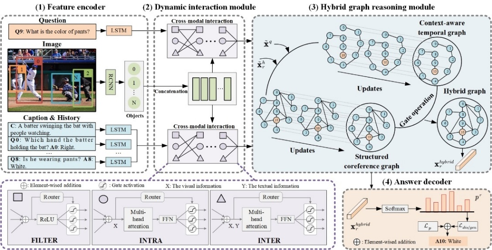
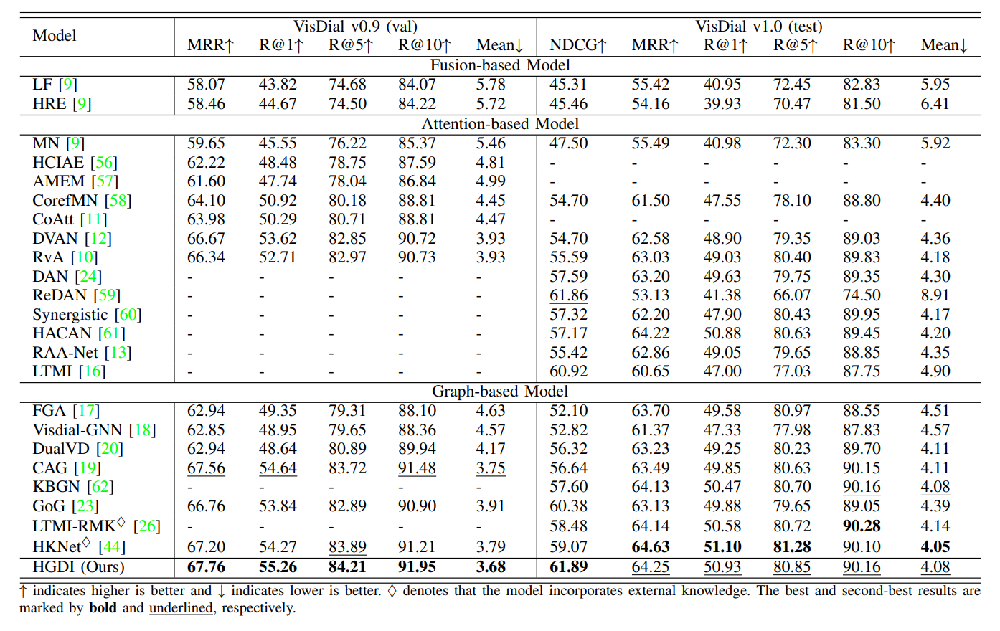
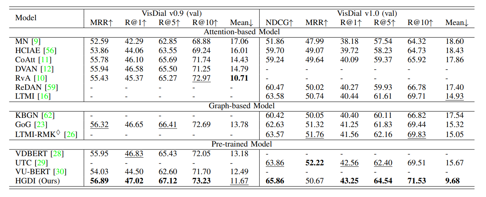
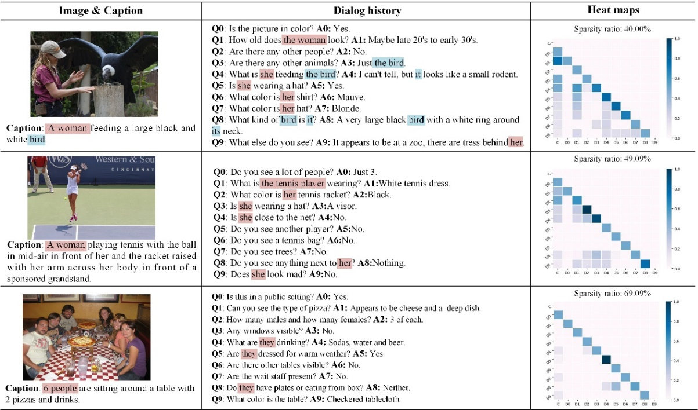
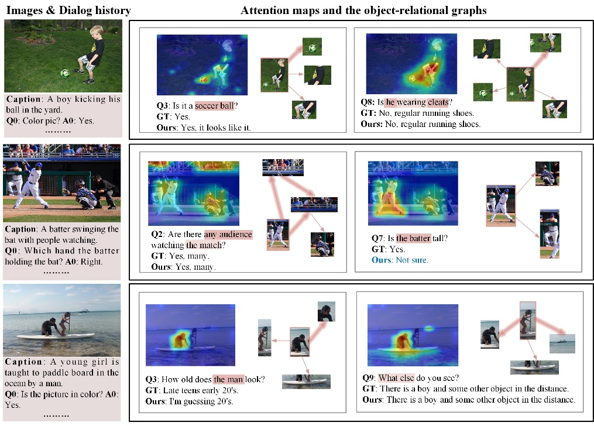

Hybrid Graph Reasoning with Dynamic Interaction for Visual Dialog
Shanshan Du, Hanli Wang, Tengpeng Li, Chang Wen Chen
Overview:
As a pivotal branch of intelligent human-computer interaction, visual dialog is a technically challenging task that requires artificial intelligence (AI) agents to answer consecutive questions based on image content and history dialog. Despite considerable progresses, visual dialog still suffers from two major problems: (1) how to design flexible cross-modal interaction patterns instead of over-reliance on expert experience and (2) how to infer underlying semantic dependencies between dialogues effectively. To address these issues, an end-to-end framework employing dynamic interaction and hybrid graph reasoning is proposed in this work. Specifically, three major components are designed and the practical benefits are demonstrated by extensive experiments. First, a dynamic interaction module is developed to automatically determine the optimal modality interaction route for multifarious questions, which consists of three elaborate functional interaction blocks endowed with dynamic routers. Second, a hybrid graph reasoning module is designed to explore adequate semantic associations between dialogues from multiple perspectives, where the hybrid graph is constructed by aggregating a structured coreference graph and a context-aware temporal graph. Third, a unified one-stage visual dialog model with an end-to-end structure is developed to train the dynamic interaction module and the hybrid graph reasoning module in a collaborative manner. Extensive experiments on the benchmark datasets of VisDial v0.9 and VisDial v1.0 demonstrate the effectiveness of the proposed method compared to other state-of-the-art approaches.
Method:
An overview of the proposed unified one-stage HGDI model is illustrated in Fig. 1. First, the feature encoder encodes visual and textual features into a common vector space to yield higher-level representations suitable for cross-modal interaction. Then, the dynamic interaction module is designed to offer more flexible interaction patterns as described. Meanwhile, the hybrid graph reasoning module combines the proposed structured coreference graph and the context-aware temporal graph to infer more reliable dialog semantic relations. Then, the vision-guided textual features after multi-step graph reasoning are fed into the answer decoder to predict reasonable answers. Finally, multiple loss functions are utilized to simultaneously optimize all modules.

Fig.1 The framework of the proposed HGDI for visual dialog.
Results:
Our proposed model HGDI is compared with several state-of-the-art visual dialog models in the discriminative setting and generative setting on two public datasets. The experimental results are shown in Table 1 and Table 2. Moreover, qualitative experiments are conducted on the VisDial v1.0 validation set to verify the effectiveness of the proposed HGDI, as illustrated in Fig. 2 and Fig. 3.
Table 1 Comparison with the state-of-the-art discriminative models on both VisDial v0.9 validation set and v1.0 test set.

Table 2 Comparison with the state-of-the-art generative models on both VisDial v0.9 and v1.0 validation sets.


Fig. 2. Visualization results of the inferred semantic structures on the validation set of VisDial v1.0. The following abbreviations are used: question (Q), generated answer (A), caption (C), and question-answer pair (D). The darker the color, the higher the relevance score.

Fig. 3. Visualization samples of visual attention maps and object-relational graphs during a progressive multi-round dialog inference. The ground-truth answer (GT) and the predicted answer achieved by HGDI (Ours) are presented.
Source Code:
原站插图：图片暂留白HGDI1.0.zip
Citation:
Please cite the following paper if you find this work useful:
Shanshan Du, Hanli Wang, Tengpeng Li, and Chang Wen Chen, Hybrid Graph Reasoning with Dynamic Interaction for Visual Dialog, IEEE Transactions on Multimedia, vol. 26, pp. 9095-9108, 2024.